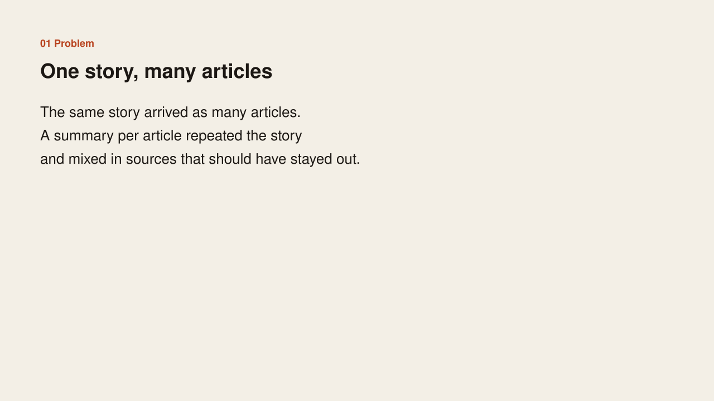
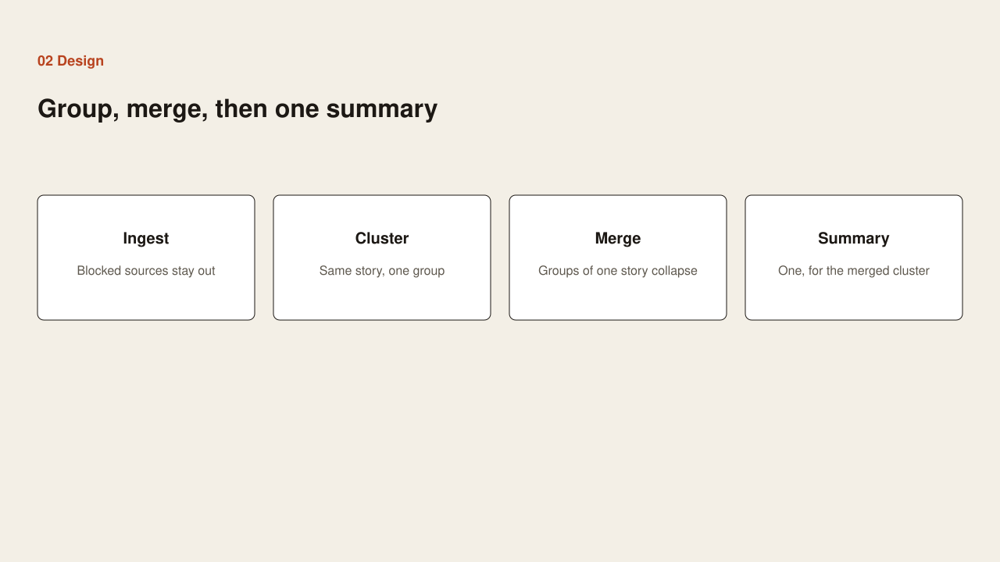
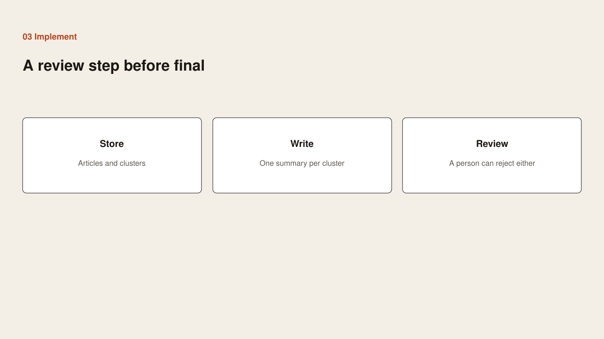
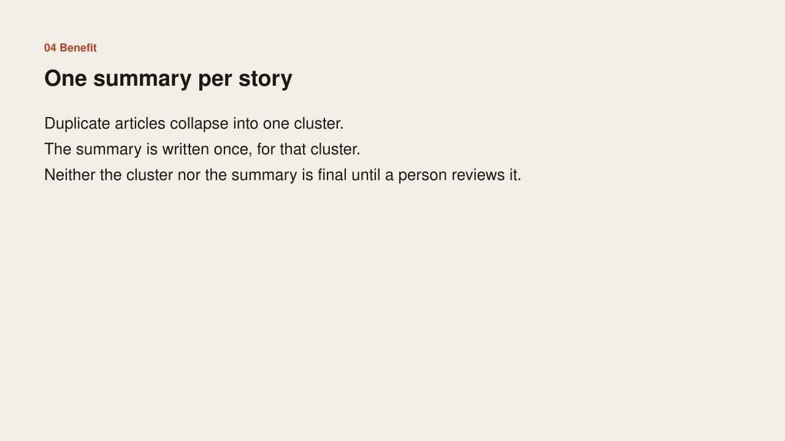

Problem
Problem

The same story arrived as many articles. A summary per article repeated the story and mixed in sources that should have stayed out.
Case study
Problem

The same story arrived as many articles. A summary per article repeated the story and mixed in sources that should have stayed out.
Design

Drop blocked sources at ingest. Group articles that are the same story. Merge clusters that later turn out to be one story. Write one summary for the merged cluster.
Implementation

Store the articles and the clusters. Write one summary per merged cluster. Leave both the cluster and the summary open to a person before either is treated as final.
Benefit

Duplicate articles collapse into one cluster. The summary is written once. Neither is final until a person reviews it.